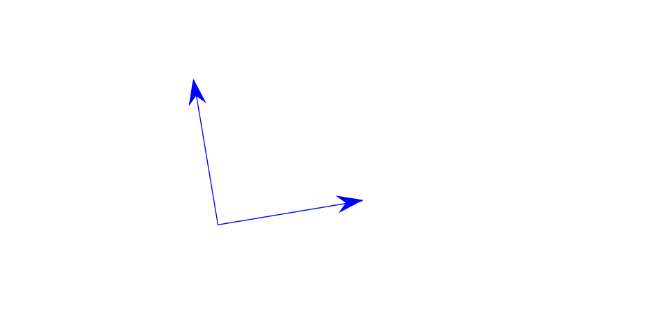

Dadas dos rectas, L y L′ en Rn, descritas parametricamente por L={P+λv∣λ∈R}L′={Q+μu∣μ∈R}, su intersección está dada por valores particulares de los parámetros λ y μ tales que: P+λv=Q+μu, los cuales encontramos resolviendo el sistema de ecuaciones eqivalente a λv−μu=Q−P.
Ejemplo
En R2 tomemos v=(1,2), u=(2,1), P=(0,1) y Q=(4,3), obteniendo μ=2λ−2=2⋅0−2=−2 y el punto de intersección es P.
En general
En R2 tomemos v=(a,c), −u=(b,d) y Q−P=(e,f), es decir el sistema de ecuaciones (*) esaλ+bμcλ+dμ=e=f, multiplicando por d y −b respectivamente obtenemos: adλ+bdμ−bcλ−bdμ=ed=−bf, sumando (ad−bc)λ=ed−bf.
Proposición El sistema e ecuaciones (*) tiene solución única si su determinantead−bc es diferente de cero □
Producto interior
Norma
Dado v=(r1,⋯,rn)∈Rn por el teorema de Pitágoras tomamos como definición ∣v∣2=i=1∑nri2
Proyección
El producto interior o producto punto de un vector v con un vector unitario w es la proyección (ortogonal) del v en la dirección de w,
así definimos para otro vector u no necesariamente unitario:
v⋅u=∣v∣∣u∣ cos(θ)
Este satisface
v⋅v=∣v∣2
v⋅u=0⟺v⊥u
Los vectores canónicos (e1=(1,0,⋯,0), e2=(0,1,0,⋯,0), …) son unitarios y ortogonales entre si, es decir, ei⋅ej=δij, la delta de Kroneker. δij={01 si i=j si i=j
w⋅(v+u)=w⋅v+w⋅u
Ejemplo
Dado un triángulo de lados A, B y C, donde A+C=B y θ es el ángulo entre A y B, tenemos C⋅C=(B−A)⋅(B−A)=∣A∣2+∣B∣2−2A⋅B, por la definición tenemos
Ley de los cosenos
∣C∣2=∣A∣2+∣B∣2−2∣A∣∣B∣ cos(θ)
Fórmula
De la definición de los vectores canónicos tenemos que v=(r1,⋯,rn), se puede expresar como v=i=1∑nriei, usando la distributividad y la delta de Kroenker tenemos para u=(s1,⋯,sn) v⋅u=i=1∑nriei⋅j=1∑nsjej=i,j=1∑nrisjei⋅ej=i,j=1∑nrisjδij=i=1∑nsiri.
La última expresión es lo que en la práctica usamos como la definición de producto interior.
Si en la penúltima expresión usamos otros coeficientes gij (con determinadas propiedades) en lugar de los δij, podemos definir otra geometría en Rn.
Teorema Para todos los vectores u,v,w∈Rn, y para todo número t∈R se cumple que
u⋅v=v⋅u
u⋅(tv)=t(u⋅v)
u⋅(v+w)=u⋅v+u⋅w
u⋅u≥0
u⋅u=0⟺u=0□
El ortogonal en R2 (compadre)
Dado un vector v=(a,b)∈R2 definimos su compadre ortogonal como v⊥=(−b,a).

Dados dos vectores v,u∈R2 y un escalar λ∈R , el producto interior cumple las propiedades:
v⋅v⊥=0
(v+u)⊥=v⊥+u⊥
(λv)⊥=λv⊥
v⊥⋅u⊥=v⋅u
u⊥⋅v=−u⋅v⊥.
Sistemas de ecuaciones
Habíamos traducido el problema de encontrar la intersección entre dos líneas rectas en resolver un sistema del tipo
λv+μu=p,
en el caso de R2 podemos despejar λ y μ usando el ortogonal y sus propiedades se tiene
λ=u⋅v⊥p⋅v⊥μ=v⋅u⊥p⋅u⊥.
Nuevamente necesitamos para poder despejar que el determinante de los vectores v y u no sea cero, esto es, v⋅u⊥=0.
Observación Los determinantes de una ecuación y de dos vectores coinciden.
Proposición Dado un vector no nulo v∈R2, se tiene, Lv⊥={x∈R2∣v⋅x=0}, es decir, la recta que genera v⊥ son las soluciones de la ecuación lineal homogénea v⋅x=0.
Demostración Una contención es inmediata de las propiedades del producto interior, pues un punto en Lv⊥ es de la forma tv⊥, así v⋅(tv⊥)=t(v⋅v⊥)=0.
Reciprocamente, sea x=(x,y), que satisface la ecuación v⋅x=0, con v=(a,b), supongamos que a=0, entonces x=−aby y así (x,y)=ay(−b,a))=(ay)v⊥, cuando b=0, despejamos y=−bax, asi (x,y)=−bx(−b,a))=(−bx)v⊥, en cualquier caso es un punto en Lv⊥□
Corolario Sean u y v dos vectores no nulos en R2, entonces, u∣∣v⟺ det(u,v)=u⊥⋅v=0
Demostraciónu⊥⋅v=0 cuando v pertenece a la recta generada por (u⊥)⊥=−u□